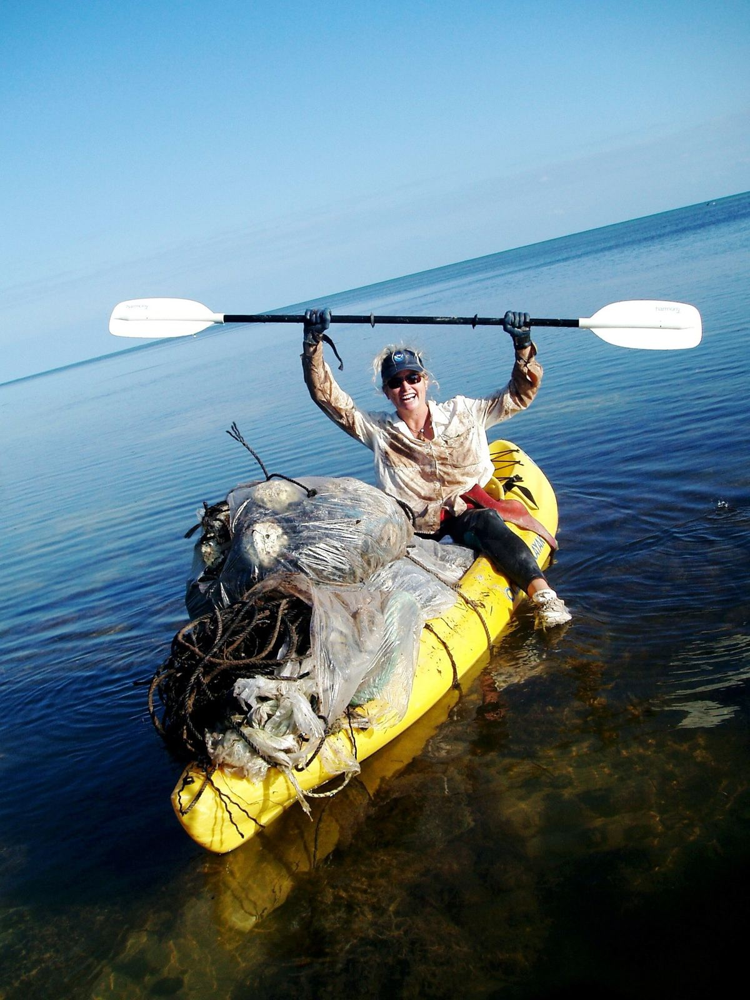
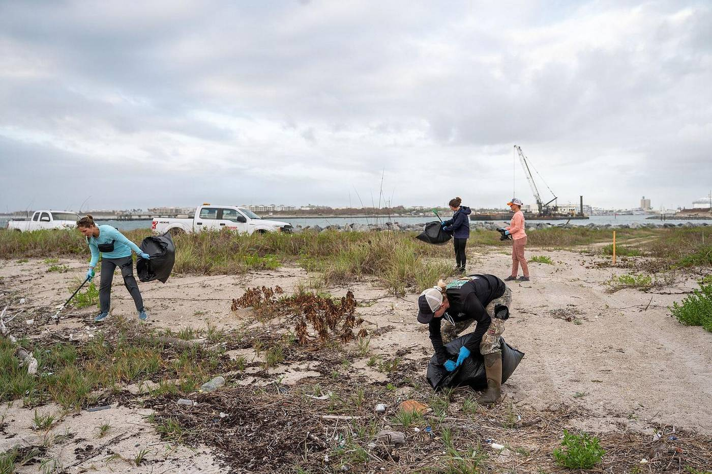
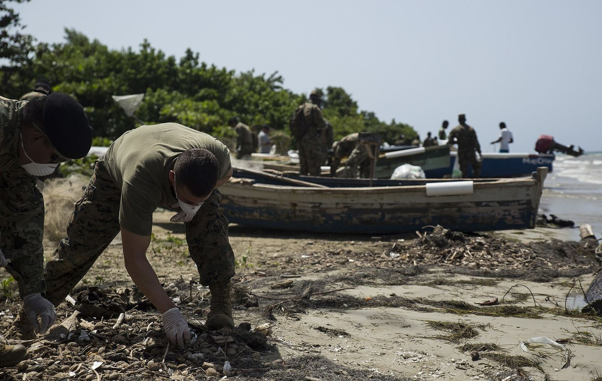

Plastic recovered
~3,000 t
About 3,000 tonnes of plastic recovered / revalorized over ~8 years (2023 press). Also reported as “nearly 3,000 tonnes” in eight years (Peru press, Jul 2024).
Group-wide · Chile, USA & Peru
Figures below are for our manufacturing partner / Everwood group (Desafío Ambiente) (operations and projects in Chile, USA, and Peru) — reported in 2023–24 press. They are not US-only totals. US-specific metrics stay as placeholders until verified.
Partner / group-wide — Chile, USA, and Peru (not Everwood USA–only).
Plastic recovered
~3,000 t
About 3,000 tonnes of plastic recovered / revalorized over ~8 years (2023 press). Also reported as “nearly 3,000 tonnes” in eight years (Peru press, Jul 2024).
Company partners
140+
140 industrial partners for R&D (2023 press); “+140 empresas han confiado en nosotros” on desafioambiente.com.
Projects
140+
More than 140 social-impact projects through industry in Chile, USA, and Peru (2023 press).
CO₂ reduced (reported)
3,300 t CO₂
Reported in 2023 Chilean press (revistaemprende / portalinnova) as group-wide — not a US-only figure.
Trees not felled (reported)
1,500
Reported in the same 2023 press as trees whose felling was avoided — group-wide framing.
Keep these as placeholders — not found in sourced research.
US plastic diverted
[US plastic diverted lbs]
UM benches / tables
[UM bench count] / [UM table count]
US furniture installed
[US furniture pieces]

4.8 kg ≈ 102 bottles
Chile product spec — Everwood listón (slat) 52 × 32 × 2,800 mm is made with about 4.8 kg of PP + HDPE, reported as equivalent to 102 two-litre bottles (everwood.cl).

Everwood USA is a locally owned Miami Beach company in partnership with Desafío Ambiente / Everwood Chile (manufacturing and innovation). Group-wide plants and projects span Chile, Peru, and related markets; press figures below are partner/group totals, not US-only.
SDG alignment is stated generally on company sites; no specific SDG numbers are claimed here.
Local cleanup and science figures — quoted from the linked sources.
25,082 lbs in Miami-Dade (2024)
“a remarkable 3,615 volunteers showed up … collecting a mind-blowing 25,082 pounds of trash at 71 cleanup sites across Miami-Dade County.” — VolunteerCleanup.org, ICC Miami-Dade 2024
Florida statewide (2024 ICC): 25,244 volunteers · 250,550 pounds · 1,236.2 miles · 733,644 items — including 109,628 plastic bottle caps and 26,801 plastic beverage bottles. Source: Ocean Conservancy 2024 ICC Annual Report (U.S. Ocean Trash Index table).




/workspace/everwood-research/facts.md when developing locally):